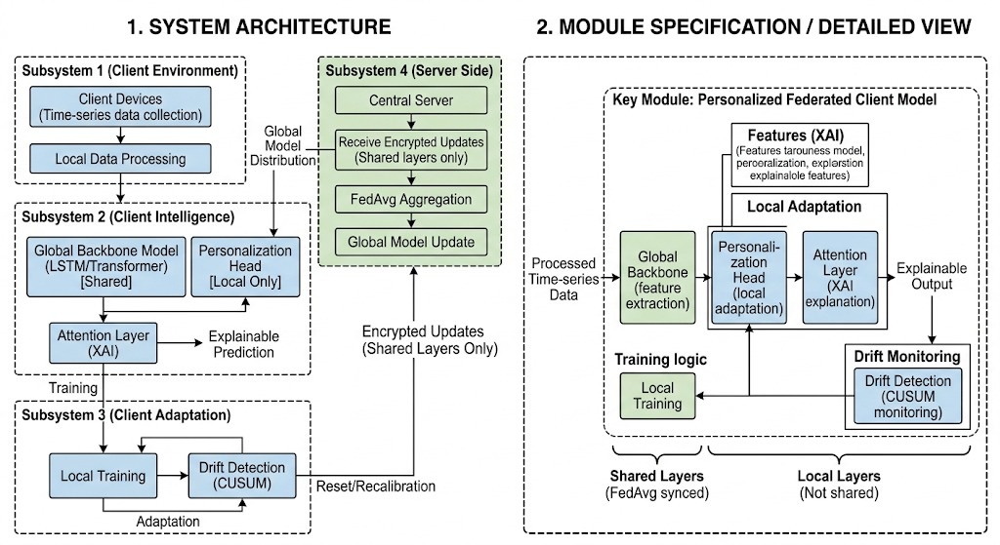
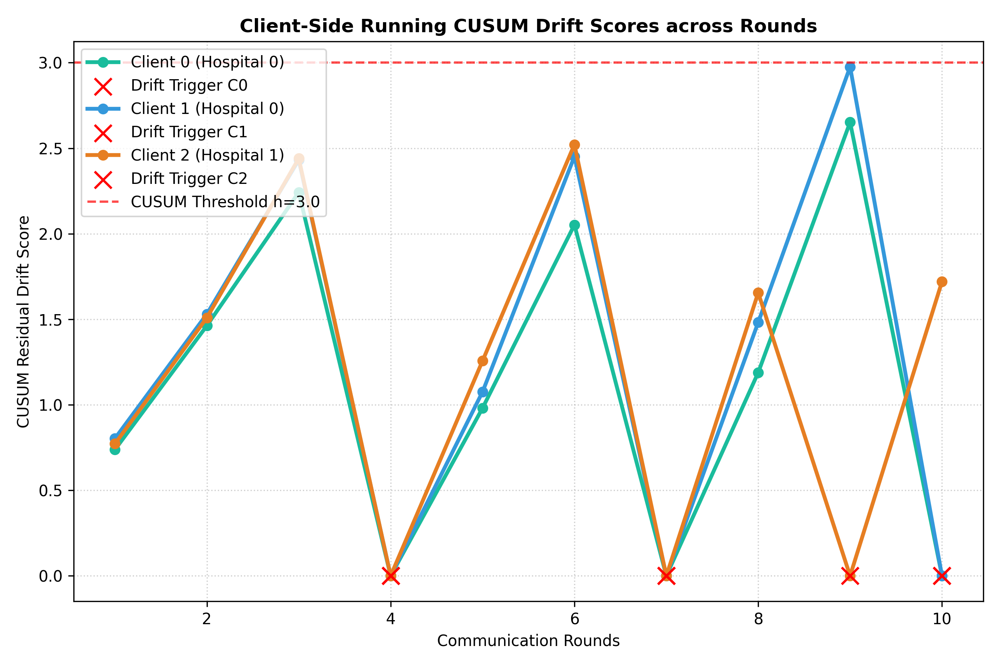
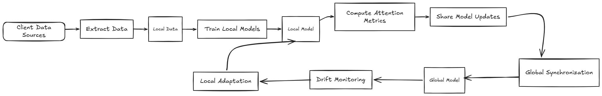

The Proposed FPDAF Methodology
A decoupled neural architecture that separates global temporal representation learning from localized drift adaptation.
End-to-End Distributed Architecture
4 Interactive Subsystems: Client Data Ingestion, Local Intelligence, AD-CUSUM Adaptation, and Server Aggregation

Adaptive Divergence-Weighted Cumulative Sum (AD-CUSUM)
Traditional CUSUM change-point detectors rely on scalar residuals and static thresholds, causing frequent false alarms under noisy sensor dropouts. AD-CUSUM couples loss residuals with symmetric Jensen-Shannon Divergence ($D_{\text{JSD}}$) and a gradient variance damping factor:
- Gradient Variance Damping: $w_{\text{grad}}^{(r)} = 1 + \tanh(\gamma \cdot \text{Var}(\nabla_{\theta_k} \mathcal{L}))$, damping false triggers from mini-batch noise.
- Self-Calibrating Slack: $\kappa_r = \mu_{\text{loss}} + \alpha \sigma_{\text{loss}}$, automatically adapting to moving error variance.
- Calibrated Threshold: $H = 3.0$ triggers selective edge adaptation when true clinical population shifts occur.

Real-Time Drift Score Accumulator ($S_r$) across 50 Federated RoundsDynamic Dual-Phase Saliency & Entropy-Regularized Personalization
Naive fine-tuning upon drift induces catastrophic forgetting of shared representations learned across other medical centers. DDP-ERP decouples the client head $\phi^k$ and optimizes a 4-term regularized objective:
- Focal Weighted Cross-Entropy: $w_{\text{pos}} = 5.0$ combats severe 1:55 sepsis class imbalance.
- Knowledge Distillation ($\mathcal{L}_{\text{distill}}$): $D_{\text{KL}}(P_{\text{local}} \,\|\, P_{\text{global}})$ bounds divergence from global consensus.
- Cosine Parameter Alignment ($\mathcal{L}_{\text{align}}$): $1 - \frac{\langle \phi^k, \theta_{\text{global}}^{\text{head}} \rangle}{\|\phi^k\|_2 \cdot \|\theta_{\text{global}}^{\text{head}}\|_2}$ preserves global trajectory alignment.
- Entropy Regularization ($\mathcal{H}$): Prevents overconfident classification under missing ICU inputs.
 FPDAF Execution Lifecycle & Freezing Protocol
FPDAF Execution Lifecycle & Freezing Protocol
Client-Side Selective Personalization (CSSP)
In clinical federated networks, edge firewalls and WAN throttles make high-volume model handshakes impractical. Under CSSP, the communication burden is eradicated:
- Backbone Freezing: Shared BiLSTM-Attention weights are locked during local adaptation.
- Zero Upload: Client heads $\phi^k$ remain on-premise, preserving absolute patient privacy.
- 960 MB Payload Saved: Keeps adaptation latency under 6 minutes on standard hospital hardware.

Selective Client-Server Aggregation Logic